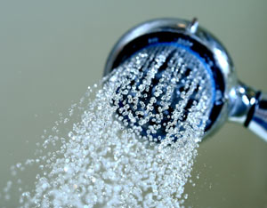

Here’s an easy way to save money and make a positive difference for the environment: Use less water. And thanks to the U.S. Environmental Protection Agency’s (EPA) WaterSense program, it’s easy to find high-quality, water-efficient toilets, faucets, shower heads and more.
The EPA introduced the WaterSense program in 2006. Similar to the Energy Star program, which promotes energy efficiency, WaterSense is designed to help people buy more water-efficient fixtures and appliances. WaterSense-certified products use about 20 percent less water while performing just as well or better than their conventional counterparts.
WaterSense contractor Kathleen Brady says that a family of four typically spends more than $800 on water and sewer services every year. But switching to WaterSense-certified appliances can make a noticeable difference on that bill. Brady says that going from a toilet manufactured before 1994 to a WaterSense toilet would cut a family of four’s water use by 16,000 gallons per year, saving them $90 annually.
But saving money is just one of the reasons to use more water-efficient appliances. Cutting water usage also decreases the amount of energy needed to treat wastewater. The WaterSense website says, “American public water supply and treatment facilities consume about 56 billion kilowatt-hours (kWh) per year - enough electricity to power 5 million homes for an entire year.” The website also says, “If one out of every 100 American homes retrofitted with water-efficient fixtures, we could save about 100 million kWh of electricity per year - avoiding 80,000 tons of greenhouse gas emissions.” Conserving water also helps maintain proper water levels in rivers, lakes and reservoirs, promoting healthier people and healthier ecosystems.
Though WaterSense is a relatively new program, it’s growing quickly. In an interview with GreenTalk Radio, Stephanie Thornton, partner outreach coordinator for WaterSense, said that more than 500 certified faucets and more than 250 certified toilets are now available, and the program is in the process of expanding to other products. Home buyers can now look for the WaterSense label when shopping for new houses, as WaterSense launched its New Homes Pilot Program in August 2008. This program certifies new homes that meet its criteria for water efficiency. The first WaterSense-certified home was unveiled in North Carolina in late 2008, and includes these water-saving features:
WaterSense products save you money in the long run, but there are also rebates available in many states to ease the initial cost of replacing old appliances with more efficient ones.
Visit the program’s website for more information on the WaterSense program, including available products, the environmental benefits of conserving water and how much money WaterSense fixtures and appliances can save.
|
 ISTOCKPHOTO/GAGO-IMAGE The EPA’s WaterSense program helps people save money by making water-efficient fixtures easy to find. |
|
|